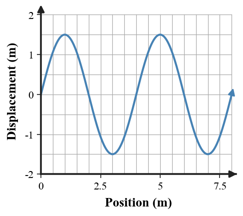
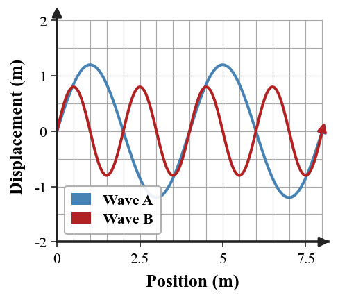
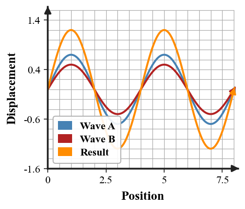
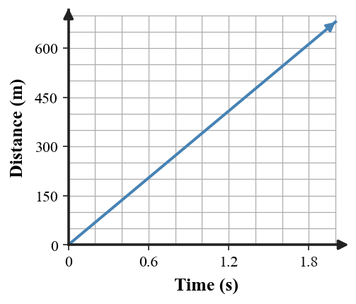
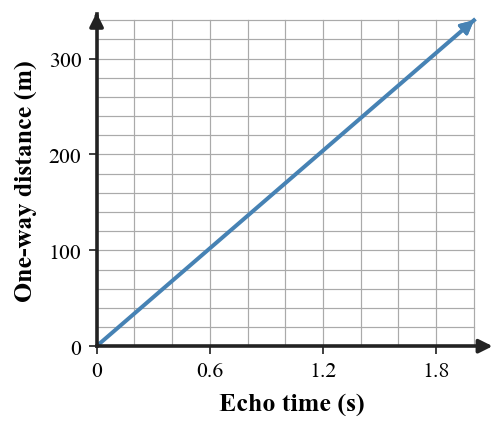
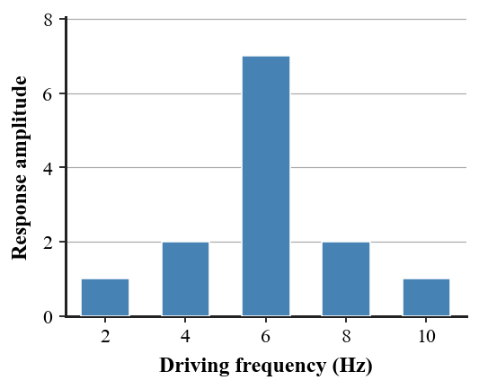
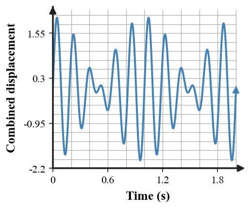

Six glasses are in a row. The first three are full and the last three are empty:
FULL FULL FULL EMPTY EMPTY EMPTY
Move exactly one glass so the row alternates full, empty, full, empty, full, empty.
Use $A=\pi r^2$ and $\pi=3.14$. A circular garden has an area of $78.5\,\text{m}^2$. Determine its radius.
Which term describes mass in motion and is calculated using $p=mv$?
A. Momentum
B. Power
C. Work
D. Impulse
Use $P=\frac{W}{t}$. A machine transfers $1{,}200\,\text{J}$ of energy by doing work in $15\,\text{s}$. Determine its average power.
A girl has as many brothers as sisters. Each of her brothers has only half as many brothers as sisters. How many boys and girls are in the family?
A greenhouse begins at $18^\circ\text{C}$ and warms by $2.5^\circ\text{C}$ each hour for 6 hours. Use $F=\frac95C+32$ to determine the final temperature in degrees Fahrenheit.
The rate at which work is done is called:
A. Momentum
B. Power
C. Potential energy
D. Impulse

During a wave-lab trial, the graph below records the shape of a rope wave at one instant while the source produces $3$ cycles each second. Use the graph to determine the wavelength, then use $v=f\lambda$ to determine the wave speed.
What common phrase is represented below?
--------------------
READING
--------------------
A rectangular metal block measures $4.0\,\text{cm}$ by $2.5\,\text{cm}$ by $3.0\,\text{cm}$ and has a mass of $240\,\text{g}$. Use $V=lwh$ and $D=\frac{m}{V}$ to determine the block's density.
Which statement best describes conservation of energy?
A. Energy can be created by a machine.
B. Energy disappears when motion stops.
C. Total energy can transfer or transform but is not created or destroyed.
D. Only kinetic energy is conserved.
Use $f=\frac{1}{T}$. One complete vibration takes $0.20\,\text{s}$. Determine the frequency.
Using exactly four 9s and ordinary arithmetic operations, make the number 100.
Determine the annual simple-interest rate if $\$2{,}500$ earns $\$300$ in 3 years. Use $I=Prt$.

Use the graph. Which wave has the shorter wavelength?
A. Wave A
B. Wave B
C. They have equal wavelengths
D. Wavelength cannot be compared from the graph
Determine the wavelength of a wave traveling at $12\,\text{m/s}$ while its source vibrates $3$ times each second. Use $v=f\lambda$.
Find the next number in the pattern:
3, 7, 15, 31, 63, ____
A device uses $72\,\text{W}$ of power when connected to $24\,\text{V}$. Use $P=IV$ to determine the current.
The number of complete cycles that occur each second is called:
A. Frequency
B. Amplitude
C. Period
D. Wavelength
Determine the period of a wave with frequency $8\,\text{Hz}$. Use $T=\frac{1}{f}$.
A person pushes a small car up to a hotel and immediately knows they have lost their fortune. What is happening?
Lena rides her bike at the same speed on a trail. A 9-mile trip took 36 minutes yesterday. Use $d=rt$ to determine how long a 14-mile trip should take today.
In a transverse wave, particles in the medium move:
A. Parallel to the direction the wave travels
B. Perpendicular to the direction the wave travels
C. With the wave all the way to the receiver
D. Only forward and never backward
A rope wave has wavelength $2.5\,\text{m}$ and frequency $4.0\,\text{Hz}$. Use $v=f\lambda$ to determine its speed.
Two people play five games of chess. Each person wins the same number of games, and there are no draws. How is that possible?
Determine the height of a cylindrical container with volume $1{,}570\,\text{cm}^3$ and radius $5.0\,\text{cm}$. Use $V=\pi r^2h$ and $\pi=3.14$.

The graph shows two waves overlapping and a larger resultant wave. Which interaction is shown?
A. Constructive interference
B. Destructive interference
C. Refraction
D. Reflection
Determine the speed of a wave with frequency $170\,\text{Hz}$ and wavelength $2.0\,\text{m}$. Use $v=f\lambda$.
What familiar phrase is represented below?
MIND
MATTER
A sample absorbs $8{,}400\,\text{J}$ of thermal energy and warms by $2.0^\circ\text{C}$. Its specific heat is $4{,}200\,\text{J/(kg}\cdot^\circ\text{C)}$. Use $Q=mc\Delta T$ to determine the sample's mass.
A change in observed frequency caused by relative motion between a source and an observer is called:
A. Resonance
B. Doppler effect
C. Reflection
D. Rarefaction
Use $v=\frac{d}{t}$. Sound travels $680\,\text{m}$ in $2.0\,\text{s}$. Determine its speed.
A person buys an item for \$20, sells it for \$30, buys it back for \$40, and sells it again for \$50. What is the total profit?
Determine the resistance of a device that has $24\,\text{V}$ across it while $2.0\,\text{A}$ of current flows. Use $V=IR$.
A standing wave contains points that remain nearly motionless. These points are called:
A. Crests
B. Nodes
C. Compressions
D. Wavefronts

An acoustic sensor records the distance traveled by a sound pulse over time, producing the graph below. Use the point at $1.5\,\text{s}$ and $v=\frac{d}{t}$ to determine the sound speed represented by the data.
If you have me, you want to share me. If you share me, you no longer have me. What am I?
A machine receives $2{,}400\,\text{J}$ of input energy and operates at $75\%$ efficiency. Use $e=\frac{E_{out}}{E_{in}}\times100\%$ to determine the useful output energy.
For a mechanical wave, the material through which the wave travels is called the:
A. Medium
B. Frequency
C. Amplitude
D. Resonance
Determine the wavelength of a sound wave traveling at $340\,\text{m/s}$ with frequency $170\,\text{Hz}$. Use $\lambda=\frac{v}{f}$.
A plane crashes exactly on the border between two countries. Where should the survivors be buried?
Determine the width of a rectangular dog run with perimeter $46\,\text{m}$ and length $15\,\text{m}$. Use $P=2l+2w$.
Which pairing is correct for sound?
A. Pitch - amplitude; loudness - frequency
B. Pitch - frequency; loudness - amplitude
C. Pitch - speed; loudness - wavelength
D. Pitch - period only; loudness - medium only
During an acoustic check in a gym, a clap echo returns after $0.80\,\text{s}$. Use $d=\frac{vt}{2}$ with $v=340\,\text{m/s}$ to determine how far the reflecting wall is from the student.
A woman shoots her husband, holds him underwater for five minutes, and then hangs him. A little later, they eat dinner together. How is this possible?
A rectangular garden has an area of $96\,\text{m}^2$ and a length of $12\,\text{m}$. The owner wants fencing around the entire garden. Use $A=lw$ and $P=2l+2w$ to determine the length of fencing needed.
A region in a longitudinal wave where particles are spread farther apart is called a:
A. Compression
B. Rarefaction
C. Crest
D. Node

A surveyor uses echoes to estimate the distance to a cliff. The graph below relates round-trip echo time to one-way distance. If the cliff is $255\,\text{m}$ away, determine the expected echo time.
If 5 identical machines can make 5 widgets in 5 minutes, how long would 100 identical machines take to make 100 widgets?
Determine the height of a triangular banner with area $1.8\,\text{m}^2$ and base $1.2\,\text{m}$. Use $A=\frac12bh$.

The response graph shows an object driven at several frequencies. Which frequency is the best estimate of the object's natural frequency?
A. $2\,\text{Hz}$
B. $4\,\text{Hz}$
C. $6\,\text{Hz}$
D. $10\,\text{Hz}$
Determine the distance to a reflecting surface when a sound pulse returns after $0.50\,\text{s}$. Use $d=\frac{vt}{2}$ with $v=340\,\text{m/s}$.
A farmer has 17 sheep. All but 9 die. How many sheep are still alive?
Use $C=\pi d$ and $\pi=3.14$. A circular fountain has circumference $15.7\,\text{m}$. Determine its diameter.
When a sound wave returns after bouncing from a surface, the wave has undergone:
A. Reflection
B. Refraction
C. Resonance
D. Rarefaction

A musician plays $5\,\text{Hz}$ and $6\,\text{Hz}$ test tones together and observes the pulsing waveform below. Use $f_{beat}=|f_1-f_2|$ to determine the beat frequency.
A square has both diagonals drawn, making six line segments total: four sides and two diagonals. Can you trace every segment exactly once in one continuous stroke without lifting your pencil? Explain why or why not.
A stage technician pushes a rolling case with a constant $75\,\text{N}$ force through $8.0\,\text{m}$ in $10\,\text{s}$. Use $W=Fd$ and $P=\frac{W}{t}$ to determine the technician's average power.
A sound wave bends because its speed changes as it enters a region with different conditions. This phenomenon is called:
A. Reflection
B. Refraction
C. Resonance
D. Constructive interference
Two tuning forks produce frequencies of $440\,\text{Hz}$ and $444\,\text{Hz}$. Use $f_{beat}=|f_1-f_2|$ to determine the beat frequency.
5.1 - Day 1
P1: Pick up the second full glass, pour its contents into the fifth glass, and return the now-empty second glass to its original position. The row becomes full, empty, full, empty, full, empty.
P2: $r=5.0\,\text{m}$.
P3: A - momentum.
P4: $P=80\,\text{W}$.
5.1 - Day 2
P1: 3 boys and 4 girls. Each girl has 3 brothers and 3 sisters; each boy has 2 brothers and 4 sisters.
P2: Intermediate: $C=18+2.5(6)=33^\circ\text{C}$. Final: $F=91.4^\circ\text{F}$.
P3: B - power.
P4: Intermediate: crest-to-crest wavelength $\lambda=4\,\text{m}$. Final: $v=(3)(4)=12\,\text{m/s}$.
5.1 - Day 3
P1: Reading between the lines.
P2: Intermediate: $V=(4.0)(2.5)(3.0)=30\,\text{cm}^3$. Final: $D=8.0\,\text{g/cm}^3$.
P3: C - total energy can transfer or transform but is not created or destroyed.
P4: $f=5.0\,\text{Hz}$.
5.2 - Day 1
P1: $99+9/9=100$.
P2: $r=0.04=4\%$.
P3: B - Wave B has the shorter wavelength.
P4: $\lambda=4.0\,\text{m}$.
5.2 - Day 2
P1: 127. Each term is double the previous term plus 1.
P2: $I=3.0\,\text{A}$.
P3: A - frequency.
P4: $T=0.125\,\text{s}$.
5.2 - Day 3
P1: They are playing Monopoly and landed at a hotel they cannot afford.
P2: Intermediate: $36\,\text{min}=0.60\,\text{h}$, so $r=15\,\text{mi/h}$. Final: $t=14/15\,\text{h}=56\,\text{min}$.
P3: B - perpendicular to the direction of wave travel.
P4: $v=10\,\text{m/s}$.
5.3 - Day 1
P1: They were not playing against each other.
P2: $h=20\,\text{cm}$.
P3: A - constructive interference.
P4: $v=340\,\text{m/s}$.
5.3 - Day 2
P1: Mind over matter.
P2: $m=1.0\,\text{kg}$.
P3: B - Doppler effect.
P4: $v=340\,\text{m/s}$.
5.3 - Day 3
P1: \$20 profit. The first transaction earns \$10 and the second transaction earns another \$10.
P2: $R=12\,\Omega$.
P3: B - nodes.
P4: At $1.5\,\text{s}$ the distance is $510\,\text{m}$, so $v=510/1.5=340\,\text{m/s}$.
5.4 - Day 1
P1: A secret.
P2: $E_{out}=1{,}800\,\text{J}$.
P3: A - medium.
P4: $\lambda=2.0\,\text{m}$.
5.4 - Day 2
P1: Nowhere. Survivors are not buried.
P2: $w=8.0\,\text{m}$.
P3: B - pitch is primarily related to frequency and loudness to amplitude.
P4: $d=136\,\text{m}$.
5.4 - Day 3
P1: She photographed him: she shot a picture, developed it in liquid, and hung the photograph to dry.
P2: Intermediate: $w=96/12=8\,\text{m}$. Final: $P=2(12)+2(8)=40\,\text{m}$.
P3: B - rarefaction.
P4: $t=1.5\,\text{s}$. The graph represents $d=170t$, equivalent to $d=340t/2$.
5.5 - Day 1
P1: 5 minutes. Each machine makes one widget in 5 minutes, so 100 machines make 100 widgets in the same 5 minutes.
P2: $h=3.0\,\text{m}$.
P3: C - $6\,\text{Hz}$, where the response amplitude is largest.
P4: $d=85\,\text{m}$.
5.5 - Day 2
P1: 9 sheep.
P2: $d=5.0\,\text{m}$.
P3: A - reflection.
P4: $f_{beat}=|6-5|=1\,\text{Hz}$. The large-amplitude envelope repeats about once each second.
5.5 - Day 3
P1: No. Each of the four corners has degree 3, so there are four odd-degree vertices. A one-stroke Euler path is possible only with 0 or 2 odd-degree vertices.
P2: Intermediate: $W=(75)(8.0)=600\,\text{J}$. Final: $P=60\,\text{W}$.
P3: B - refraction.
P4: $f_{beat}=4\,\text{Hz}$.